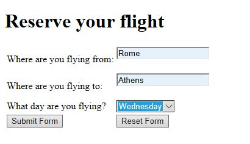
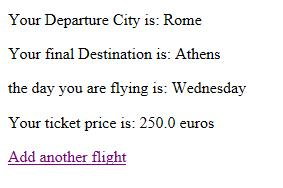
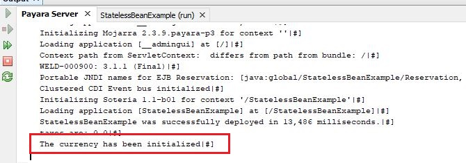
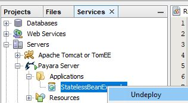
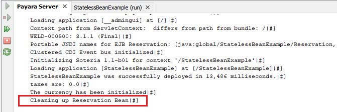
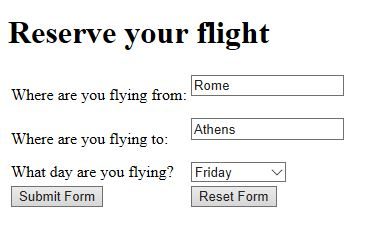
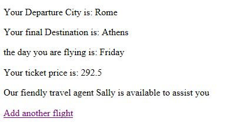

Στην δωρεάν ενότητα Java EE θα συνεχίσουμε
την ανάλυση μας στα Stateless Session Beans.
Στην προηγούμενη ενότητα μιλήσαμε για την περίπτωση όπου
έχουμε instance variables μέσα σε ένα Stateless
Session Bean και μέσω των getter και setter μεθόδων
είχαμε την δυνατότητα να διαχειριστούμε τις τιμές
τις οποίες μπορούσαν να πάρουν αυτές οι μεταβλητές.
Όπως είχαμε αναφέρει, και θα το αναφέρουμε ξανά μέσα
σε αυτή την ενότητα, το να έχουμε instance variables
μέσα σε ένα Stateless Session Bean είναι σχεδόν μια
άκυρη διαδικασία. Επειδή δεν διατηρείται το conversation
state με τον client δεν ξέρουμε αν θα πάρουμε πίσω
την τιμή με την οποία ισούται η instance μεταβλητή
ή απλά θα λάβουμε null γιατί εκείνη την στιγμή
που ζητήσαμε την τιμή με μια getter μέθοδο κάποιο
άλλο αντικείμενο ήταν διαθέσιμο που δεν γνώριζε την
προηγούμενη τιμή της μεταβλητής.
Σίγουρα, διαβάζοντας την πιο πάνω θεωρία θα αναρωτηθείτε
γιατί ασχοληθήκαμε με τις instance variables αν δεν είναι
χρήσιμες μέσα σε ένα Stateless Session Bean.
Βασικά οι λόγοι είναι δύο: πρώτον γιατί αν το
κάνετε δεν θα παραπονεθεί ο Application Server
οπότε θα εκτελέσει το πρόγραμμα μας ασχέτως αν
λάβετε παράξενα αποτελέσματα, και κατά δεύτερον
σαν θεωρία θα μας είναι πολύ χρήσιμη όταν μιλήσουμε
για τα Stateful Session Beans. Για τα Stateless
Session Beans όμως καλό είναι να αποφεύγετε την χρήση τους.
Εκτός όμως από τα instance variables υπάρχει και κάτι
που ονομάζεται Stateless Bean Life Cycle. Στην ουσία
είναι δύο call back μέθοδοι με ονόματα @PostConstruct
και @PreDestroy.
Αφού έχουμε δημιουργήσει ένα Stateless Session Bean,
το @PostConstruct annotation μπορεί να χρησιμοποιηθεί
σε οποιαδήποτε μέθοδο την οποία θέλουμε να εκτελεστεί
πρώτη πριν εκτελεστούν οι υπόλοιπες μέθοδοι του bean.
Όσο αφορά το @PreDestroy annotation, αυτό μπορεί
να χρησιμοποιηθεί σε οποιαδήποτε μέθοδο που θέλουμε
να εκτελεστεί πριν σταματήσουμε την λειτουργία του
bean π.χ. κάνοντας undeploy την εφαρμογή. Ας
τροποποιήσουμε λίγο το παράδειγμα μας από την ενότητα
4 και ας συμπεριλάβουμε και δύο ακόμα μεθόδους που θα
έχουν τα @PostConstruct και @Predestroy annotations αντίστοιχα
index.html
<!DOCTYPE html>
<html>
<head>
<title>Flight Reservation</title>
<meta charset="UTF-8">
<meta name="viewport" content="width=device-width, initial-scale=1.0">
<meta charset="utf-8">
<meta name="viewport" content="width=device-width, initial-scale=1, shrink-to-fit=no">
<link rel="stylesheet" href="https://maxcdn.bootstrapcdn.com/bootstrap/4.0.0/css/bootstrap.min.css"
integrity="sha384-Gn5384xqQ1aoWXA+058RXPxPg6fy4IWvTNh0E263XmFcJlSAwiGgFAW/dAiS6JXm"
crossorigin="anonymous">
</head>
<body>
<h1>Reserve your flight</h1>
<form method="POST" action="SimpleServlet">
<table>
<tr>
<div class="form-group">
<td><label for="dept">Where are you flying from: </label></td>
<td><input type="text" id="dept" name="dept" /><br><br></td>
</div>
</tr>
<tr>
<div class="form-group">
<td><label for="dest">Where are you flying to: </label></td>
<td><input type="text" id="dest" name="dest" /><br><br></td>
</div>
</tr>
<tr>
<div class="form-group">
<td><label for="myday">What day are you flying? </label></td>
<td><select id="myday" name="myday">
<option value="Monday">Monday</option>
<option value="Tuesday">Tuesday</option>
<option value="Wednesday">Wednesday</option>
<option value="Thursday">Thursday</option>
<option value="Friday">Friday</option>
<option value="Saturday">Saturday</option>
<option value="Sunday">Sunday</option> </td>
</select>
</div>
</tr>
<tr>
<td><input type="submit" class="btn btn-primary mb-2" value="Submit Form"/></td>
<td> <input type="reset" class="btn btn-primary mb-2" value="Reset Form" /></td>
</tr>
</table>
</form>
</body>
</html>
Reservation.java
package com.mycompany;
import javax.annotation.PostConstruct;
import javax.annotation.PreDestroy;
import javax.ejb.Stateless;
@Stateless
public class Reservation {
private String departure;
private String destination;
private String tripdate;
private String country_currency;
@PostConstruct
private void initialize() {
country_currency = "euros";
System.out.println("The currency has been initialized");
}
@PreDestroy
private void destroy() {
System.out.println("Cleaning up Reservation Bean");
}
public String getcurrency() {
return country_currency;
}
public String getDeparture() {
return departure;
}
public void setDeparture(String departure) {
this.departure = departure;
}
public String getDestination() {
return destination;
}
public void setDestination(String destination) {
this.destination = destination;
}
public String getTripdate() {
return tripdate;
}
public void setTripdate(String tripdate) {
this.tripdate = tripdate;
}
public double final_price(double taxes) {
return ((250*taxes)+250);
}
}
SimpleServlet.java
package com.mycompany;
import java.io.IOException;
import java.io.PrintWriter;
import javax.inject.Inject;
import javax.servlet.ServletException;
import javax.servlet.http.HttpServlet;
import javax.servlet.http.HttpServletRequest;
import javax.servlet.http.HttpServletResponse;
public class SimpleServlet extends HttpServlet {
@Inject
Reservation reserve;
protected void processRequest(HttpServletRequest request, HttpServletResponse response)
throws ServletException, IOException {
response.setContentType("text/html;charset=UTF-8");
try (PrintWriter out = response.getWriter()) {
String dept = request.getParameter("dept");
String dest = request.getParameter("dest");
String myday = request.getParameter("myday");
double taxes = 0;
if (myday.equals("Monday")) {
taxes = 0.25;
}
if (myday.equals("Tuesday")) {
taxes = 0.23;
}
if (myday.equals("Wedbesday")) {
taxes = 0.21;
}
if (myday.equals("Thursday")) {
taxes = 0.19;
}
if (myday.equals("Friday")) {
taxes = 0.17;
}
if (myday.equals("Saturday")) {
taxes = 0.15;
}
if (myday.equals("Sunday")) {
taxes = 0.12;
}
System.out.println("taxes are: " + taxes);
reserve.setDeparture(dept);
reserve.setDestination(dest);
reserve.setTripdate(myday);
/* TODO output your page here. You may use following sample code. */
out.println("<!DOCTYPE html>");
out.println("<html>");
out.println("<head>");
out.println("<title>Flight Reservation</title>");
out.println("</head>");
out.println("<body>");
out.println("<p>Your Departure City is: " + reserve.getDeparture());
out.println("<p>Your final Destination is: " + reserve.getDestination());
out.println("<p>the day you are flying is: " + reserve.getTripdate());
out.println("<p>Your ticket price is: " + reserve.final_price(taxes)+ " " + reserve.getcurrency());
out.println("<p/>");
out.println("<a href='index.html'>Add another flight</a>");
out.println("</body>");
out.println("</html>");
}
}
@Override
protected void doGet(HttpServletRequest request, HttpServletResponse response)
throws ServletException, IOException {
processRequest(request, response);
}
@Override
protected void doPost(HttpServletRequest request, HttpServletResponse response)
throws ServletException, IOException {
processRequest(request, response);
}
@Override
public String getServletInfo() {
return "Short description";
}// </editor-fold>
}
Η index.html σελίδα έχει παραμείνει η ίδια χωρίς καμία αλλαγή.
Στο Stateless Session Bean Reservation προσθέσαμε μια ακόμα
instance variable με το όνομα country_currency την οποία θέλουμε
να αρχικοποιήσουμε με την τιμή “euros” μέσω της μεθόδου initialize( ).
Το annotation @PostConstruct δίνει την ιδιότητα στην μέθοδο
initialize( ) να εκτελεστεί πριν οποιαδήποτε άλλη μέθοδο,
με συνέπεια η μεταβλητή country_currency να έχει ήδη αρχικοποιηθεί
με την τιμή euros όταν κάποια getter μέθοδο την καλέσει. Για να
το αποδείξουμε αυτό προσθέσαμε και μια getter μέθοδο με το όνομα
getcurrency( ). Τέλος, προσθέσαμε το annotation @PreDestroy σε
μια μέθοδο με το όνομα destroy( ) που απλά μας δείχνει ένα
μήνυμα στην κονσόλα του Payara Server λίγο πριν γίνει undeploy
η εφαρμογή. Ας τα δοκιμάσουμε λοιπόν όλα αυτά. Ξεκινάμε τρέχοντας την εφαρμογή.


Όπως βλέπουμε στο αποτέλεσμα που εμφανίζεται στον browser,
το νόμισμα είναι euros που σημαίνει ότι η @PostConstruct
μέθοδο λειτούργησε. Μπορούμε άλλωστε να το δούμε αυτό και
από την κονσόλα του Payara Server.

Ας πάμε τώρα στο tab Services, και κάντε undeploy την εφαρμογή μας που
βρίσκεται στον Applications φάκελο του Payara.

Πριν η εφαρμογή σας καθαριστεί από τον Server και σταματήσει
να είναι διαθέσιμη, θα τρέξει η @PreDestroy μέθοδο.

Τώρα ας απαντήσουμε το πιο βασικό ερώτημα – έχει
ουσία να χρησιμοποιήσουμε instance variables ή
call back μεθόδους στα Stateless Session Beans?
Η απάντηση είναι όχι. Επειδή τα Stateless Session
Beans δεν κρατάμε conversation state με τον client,
οι δύο παραπάνω πράξεις μπορείς να μας επιστρέψουν λανθασμένα
αποτελέσματα. Ο κύριος όμως λόγος ύπαρξης των Stateless Session
Beans είναι πρώτον η γρήγορη απόδοση τους στα αιτήματα των clients
(σε αυτό βοηθάει και το bean pooling του application server)
αλλά το εύκολο scaling που μας παρέχουν όταν μεγαλώνει γρήγορα
ο αριθμός των client που χρησιμοποιούν την εφαρμογή μας.
Τελικά τι μπορούμε να γράψουμε σε ένα Stateless Session
Bean? Μόνο μεθόδους! Στο πιο κάτω παράδειγμα
δείχνουμε πως έχουμε τροποποιήσει το πρόγραμμα μας
για ακόμα μια φορά. To index.html παραμένει το ίδιο.
Reservation.java
package com.mycompany;
import java.util.Arrays;
import java.util.List;
import javax.annotation.PostConstruct;
import javax.annotation.PreDestroy;
import javax.ejb.Stateless;
@Stateless
public class Reservation {
public double final_price(double taxes) {
return ((250*taxes)+250);
}
private List<String> agents = Arrays.asList(
"Agnes","Brian","Harry","Sally","Tom","Pamela",
"Mark","Wendy","Marcia","Graeme","Pravztik",
"Hadeep", "Florence", "Robert", "Zoe", "Frank" );
public String getNextAgentName() {
return agents.get((int)( Math.random() * agents.size() ));
}
}
SimpleServlet.java
package com.mycompany;
import java.io.IOException;
import java.io.PrintWriter;
import javax.inject.Inject;
import javax.servlet.ServletException;
import javax.servlet.http.HttpServlet;
import javax.servlet.http.HttpServletRequest;
import javax.servlet.http.HttpServletResponse;
public class SimpleServlet extends HttpServlet {
@Inject
Reservation reserve;
protected void processRequest(HttpServletRequest request, HttpServletResponse response)
throws ServletException, IOException {
response.setContentType("text/html;charset=UTF-8");
try (PrintWriter out = response.getWriter()) {
String dept = request.getParameter("dept");
String dest = request.getParameter("dest");
String myday = request.getParameter("myday");
double taxes = 0;
if (myday.equals("Monday")) {
taxes = 0.25;
}
if (myday.equals("Tuesday")) {
taxes = 0.23;
}
if (myday.equals("Wedbesday")) {
taxes = 0.21;
}
if (myday.equals("Thursday")) {
taxes = 0.19;
}
if (myday.equals("Friday")) {
taxes = 0.17;
}
if (myday.equals("Saturday")) {
taxes = 0.15;
}
if (myday.equals("Sunday")) {
taxes = 0.12;
}
/* TODO output your page here. You may use following sample code. */
out.println("<!DOCTYPE html>");
out.println("<html>");
out.println("<head>");
out.println("<title>Flight Reservation</title>");
out.println("</head>");
out.println("<body>");
out.println("<p>Your Departure City is: " + dept);
out.println("<p>Your final Destination is: " + dest);
out.println("<p>the day you are flying is: " + myday);
out.println("<p>Your ticket price is: " + reserve.final_price(taxes));
out.println("<p>Our fiendly travel agent " + reserve.getNextAgentName()+
" is available to assist you");
out.println("<p/>");
out.println("<a href='index.html'>Add another flight</a>");
out.println("</body>");
out.println("</html>");
}
}
@Override
protected void doGet(HttpServletRequest request, HttpServletResponse response)
throws ServletException, IOException {
processRequest(request, response);
}
@Override
protected void doPost(HttpServletRequest request, HttpServletResponse response)
throws ServletException, IOException {
processRequest(request, response);
}
@Override
public String getServletInfo() {
return "Short description";
}// </editor-fold>
}
Το Reservation Stateless Session Bean τώρα αποτελείται
από δύο μόνο μεθόδους: η πρώτη είναι εκείνη που υπολογίζει
την τελική τιμή του ταξιδιού με βάση τον φόρο, και η δεύτερη
επιλέγει ένα τυχαίο όνομα, από μια λίστα με ονόματα, το
οποίο αντιπροσωπεύει τον διαθέσιμο travel agent την ώρα
που προσπαθούμε να κάνουμε κράτηση για το ταξίδι μας.

